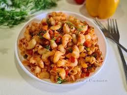

Home
Macaroni Recipe

Description
lace patties on the preheated grill. Cover and cook 6 to 8 minutes per side, or to desired doneness.
An instant-read thermometer inserted into the center should read at least 160 degrees F (70 degrees C).
This mac and cheese recipe uses staple ingredients and comes together in just 25 minutes. You'll want to bookmark this recipe for busy weeknights.
The good news is, it's so simple that once you make it a couple times, you'll likely have it memorized.
Ingredients
- 1 box (8 ounce) elbow macaroni
- ¼ cup butter
- ¼ cup all-purpose flour
- ½ teaspoon salt
- Ground black pepper to taste
- 2 cups milk
- 2 cups shredded cheddar cheese
Steps
- Gather the ingredients.
- Bring a large pot of lightly salted water to a boil.
Cook elbow macaroni in the boiling water, stirring occasionally until cooked through but firm to the bite, 8 minutes.
- At the same time, melt butter in a saucepan over medium heat
- Add flour, salt, and pepper and stir until smooth, about 5 minutes.
- Pour in milk slowly, while stirring continuously.
Continue to cook and stir until mixture is smooth and bubbling, about 5 minutes, making sure the milk doesn't burn.
- Add Cheddar cheese and stir until melted, 2 to 4 minutes.
- Drain macaroni and fold into cheese sauce until coated.
- Serve hot and enjoy!
Check out more recipes!